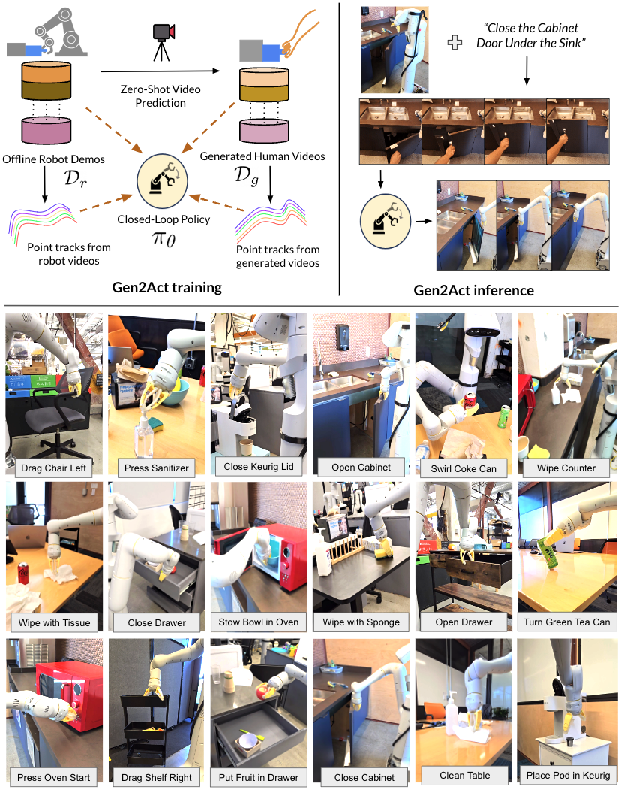
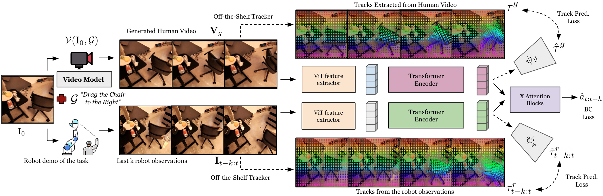
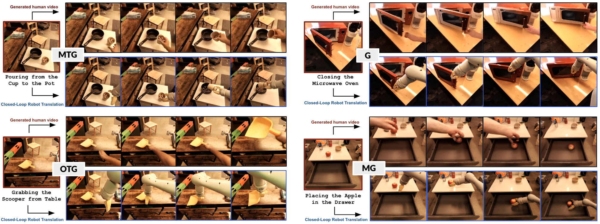

目录
1. 论文速览
| 论文要解决什么 | 机器人操作策略很难泛化到新物体类型、新动作类型和未见真实场景；直接扩大机器人数据采集成本高，且不现实。论文想解决的问题是：能否利用 web-scale 视频模型已有的人类操作运动知识，让机器人在少量机器人示范下执行训练数据中没有覆盖的新任务？ |
|---|---|
| 作者的方法抓手 | 将语言条件操作拆成两步：先用预训练 VideoPoet 根据场景首帧和语言生成“人类完成任务”的视频，再训练一个闭环机器人策略 $\pi_\theta(\mathbf{I}_{t-k:t},\mathbf{V}_g)$ 把生成的人类视频翻译为机器人动作。训练策略时额外加入点轨迹预测辅助损失，让策略 latent 显式吸收视频里的运动线索。 |
| 最重要的结果 | Gen2Act 在真实移动机械臂实验中平均成功率达到 60%，高于 RT1 的 22%、RT1-GC 的 26%、Vid2Robot 的 37%、以及不加 track loss 的 49%。在更难的 Object-Type Generalization 和 Motion-Type Generalization 上分别达到 58% 和 30%，相对最强基线有约 30 个百分点的绝对提升。 |
| 阅读时要注意的点 | 这篇论文不是让视频模型生成机器人视频，而是生成人类视频；真正要评估的是“人类视频中的运动 cue 是否能被策略可靠翻译成机器人动作”。重点看三件事：视频生成错误是否导致失败、point track 辅助损失到底贡献多大、以及长程任务链式执行是否只是短任务成功率的乘法累积。 |

2. 动机与问题定义
2.1 为什么要绕到“人类视频”
作者观察到，日常操作任务的分布极宽：办公室、厨房、实验室里有不同物体、不同背景、不同动作模式。要为每种任务都采集机器人数据非常昂贵。相比之下，互联网上的人类视频包含大量“如何操作物体”的运动知识，例如打开微波炉、倒水、擦桌子、旋转物体等。
现有视频生成模型由于在海量 web 视频上训练，能够在给定场景图像和文本任务时零样本生成比较合理的人类操作视频。Gen2Act 的核心假设是：这些人类视频虽然不是机器人动作，但它们含有足够的运动线索，可以作为机器人策略的条件输入。
2.2 任务形式化
给定初始场景图像 $\mathbf{I}_0$ 和语言目标 $\mathcal{G}$，目标是让机器人输出动作序列 $\mathbf{a}_{1:H}$ 完成任务。Gen2Act 将其拆为：
其中 $\mathcal{V}$ 是预训练视频生成模型，输出人类操作视频 $\mathbf{V}_g$。再由闭环策略输出机器人动作：
注意这里的策略不是开环照抄视频，而是每一步还看最近 $k$ 帧机器人观察，因此可以对真实执行状态做反应。
2.3 论文贡献
- 提出把语言条件机器人操作改写为“零样本人类视频生成 + 人类视频到机器人动作翻译”。
- 不微调视频生成模型，直接利用 VideoPoet 的 web-scale 运动知识，降低机器人数据采集需求。
- 提出在策略训练中加入 generated-human-video tracks 和 robot-observation tracks 的预测辅助损失，让 latent tokens 更运动感知。
- 在真实移动机械臂上系统评估 mild、standard、object-type、motion-type 四级泛化，并展示长程任务链式执行。
4. 方法详解
4.1 总体架构
Gen2Act 有两个阶段。第一阶段用视频模型生成人类视频，第二阶段用闭环策略把生成视频翻译成机器人动作。训练时，策略不仅做行为克隆，还预测点轨迹；推理时，点轨迹预测头不再使用，只保留视频条件策略。

4.2 Human Video Generation
作者使用 VideoPoet 做 text+image conditioned video generation。输入是场景图像和任务文本，输出是人类完成任务的视频。关键工程选择有三点：
- 不生成机器人视频：当前视频生成模型在 web 人类视频上训练，零样本生成机器人视频不可靠；若为机器人视频微调，可能牺牲 web-scale 模型在新场景上的泛化。
- 不微调 VideoPoet：论文直接使用预训练模型，附录说 VideoPoet 训练于超过 270M 视频，因此具备广泛的日常操作先验。
- 训练时自动配对：对每条机器人轨迹，用轨迹首帧和语言指令生成对应人类视频，构成 $(\texttt{generated\_human\_video}, \texttt{robot\_demo})$ 配对数据。
附录给出的 prompt 形式很简单：A person task-name, static camera。例如打开微波炉时输入 A person opening the microwave, static camera。作者还强调首帧中机器人手臂要尽量不遮挡场景，因此机器人在每个任务前会回到固定 reset pose。

4.3 Generated Human Video to Robot Action Translation
翻译策略输入两部分：生成的人类视频 $\mathbf{V}_g$ 和最近 $k$ 帧机器人观察 $\mathbf{I}_{t-k:t}$。两者先通过 ViT encoder $\chi$ 提取视觉特征：
由于视频 token 数量很大且时间上不够规整，作者用 Perceiver-Resampler 风格的 Transformer encoders $\Phi_g,\Phi_r$ 将它们压缩成固定数量 tokens：
附录补充：生成视频 token 和机器人观察 token 都使用 2 层 Perceiver-Resampler；生成视频固定采样 16 帧，并保证包含第一帧和最后一帧；机器人历史使用最近 8 帧；所有图像 resize 到 $224\times224$。
4.4 Point Track Prediction 辅助损失
Gen2Act 不只把生成视频当作视觉特征，还希望 latent tokens 编码“点如何运动”。作者用 TAPIR / BootsTAP 等 off-the-shelf tracker 从生成视频中抽取随机点轨迹 $\tau_g$，从机器人观察视频中抽取 $\tau_r$。
对生成视频，给定第一帧点 $P^0$、第一帧特征 $i_g^0$ 和视频 tokens $z_g$，track prediction transformer $\psi_g$ 预测轨迹：
机器人观察侧也类似，只是输入为 chunk 开始时刻 $P^{t-k}$、$i_{t-k}$ 和观察 tokens $z_r$。附录说明 track prediction transformer 有 6 个 self-attention layers、8 个 heads。
4.5 Behavior Cloning 动作预测
动作空间被离散化，每个动作维度有 256 个 bins，动作值在每个维度的上下界内均匀分桶。策略预测未来动作 $\hat a_{t:t+h}$，用 cross-entropy 与 ground-truth 动作 $a_{t:t+h}$ 做行为克隆。动作是 end-effector space，还预测 episode 是否终止、夹爪开合。
整体训练目标可以理解为：
其中论文没有强调具体 $\lambda_\tau$ 数值，但清楚说明 track prediction 只用于训练，不增加测试时计算。
4.6 Deployment 与长程任务链式执行
单任务部署：机器人看到当前场景图像，用户给语言任务，VideoPoet 生成一段人类视频，闭环策略根据该视频和机器人近期观察持续输出动作。
长程任务部署：先用 Gemini 将活动分解为若干子任务，例如 “Making Coffee” 分成打开盖子、放入 K-Cup、合上盖子。每完成一个子任务，就用上一个机器人执行后的最后一帧作为下一段视频生成的首帧，而不是从最初图片一次性生成所有子任务视频。附录说 VideoPoet 第一段后续新视频生成时间少于 10 秒。

5. 实验与结果
5.1 评估设置
真实实验覆盖厨房、办公室和实验室场景，机器人是带 compliant two-finger gripper 的移动机械臂，右侧安装机械臂，用 end-effector control，操作频率 3Hz。每个任务前机械臂复位到固定姿态，减少对相机视野遮挡。
作者按四级泛化评估：
| 缩写 | 定义 | 直觉 |
|---|---|---|
| MG | Mild Generalization: 已见场景中已见物体实例的新配置，以及光照/背景等自然变化。 | 最接近训练分布。 |
| G | Standard Generalization: 已见或未见场景中的未见物体实例。 | 物体实例变了，但类型通常仍熟悉。 |
| OTG | Object-Type Generalization: 完全未见物体类型，且在未见场景。 | 测试“新东西怎么操作”。 |
| MTG | Motion-Type Generalization: 完全未见动作类型，且在未见场景。 | 测试“新运动模式怎么做”。 |
5.2 主结果：四级泛化
| 方法 | MG | G | OTG | MTG | Avg. |
|---|---|---|---|---|---|
| RT1 | 68 | 18 | 0 | 0 | 22 |
| RT1-GC | 75 | 24 | 5 | 0 | 26 |
| Vid2Robot | 83 | 38 | 25 | 0 | 37 |
| Gen2Act w/o track | 83 | 58 | 50 | 5 | 49 |
| Gen2Act | 83 | 67 | 58 | 30 | 60 |
读表重点：MG 上 Vid2Robot 和 Gen2Act 都是 83，说明在接近训练分布时，已有真实人类视频配对方法也很强；真正差异出现在 G/OTG/MTG。尤其 MTG 中，RT1、RT1-GC、Vid2Robot 都为 0，而 Gen2Act 达到 30，说明生成视频确实提供了训练机器人数据中没有的运动模式。
Track loss 的贡献也很直接：Gen2Act w/o track 平均 49，完整模型平均 60；MTG 从 5 到 30，是最能体现“点轨迹辅助监督提供运动信息”的数字。

5.3 Baselines
- RT1: 使用同一机器人数据训练的语言条件策略，不看生成视频。
- RT1-GC: goal-image conditioned policy，只看生成视频最后一帧，相当于用目标图像表达“做成什么样”。
- Vid2Robot: 用真实配对 human-robot videos 训练的视频条件策略。
- Gen2Act w/o track: 不使用点轨迹预测辅助损失，只保留生成视频条件和 BC。
RT1-GC 低于 Gen2Act，说明最后一帧 goal image 只表达 what，不足以表达 how。Vid2Robot 在 MG 强但在 MTG 为 0，说明真实配对人类视频如果覆盖不足，也不能给新运动类型提供足够线索。
5.4 Human Video Generation 分析
作者的定性分析显示，VideoPoet 能在未见机器人实验场景中生成与任务文本匹配的人类操作视频：保留背景、操纵对应物体、相机运动较少。这一点是整个系统成立的前提，因为下游策略不是从语言中凭空规划，而是从视频里读出运动方向、接触顺序和目标状态。
5.5 长程任务链式执行
作者用 Gemini 把活动分解为三个子任务，然后按子任务顺序执行 Gen2Act。每个活动 5 次 trial，报告阶段成功率。
| Activity | Stages | Success %: Stage 1, Stage 2, Stage 3 |
|---|---|---|
| Stowing Apple | Open Drawer; Place Apple in Drawer; Close Drawer | 80, 60, 60 |
| Making Coffee | Open Lid; Place K-Cup Pod inside; Close Lid | 40, 20, 20 |
| Cleaning Table | Pick Tissues; Press Sanitizer Dispenser; Wipe Table | 60, 40, 40 |
| Heating Soup | Open Microwave; Put Bowl inside Microwave; Close Microwave | 40, 20, 20 |
这些数字说明链式执行可行，但还很脆弱。第三阶段成功率没有进一步从第二阶段下降的两个任务，可能是因为只统计成功完成到该阶段的 trial；但总体来看，单任务成功率一旦不到很高，长程任务会很快受前序错误影响。
5.6 Co-training with 400 Teleop Demonstrations
| 配置 | MG | G | OTG | MTG | Avg. |
|---|---|---|---|---|---|
| Gen2Act w/o co-train | 83 | 67 | 58 | 30 | 60 |
| Gen2Act w/ co-train | 85 | 75 | 62 | 35 | 64 |
加入约 400 条 diverse tele-operated trajectories 后，平均从 60 提升到 64。提升不巨大，但很有意义：作者的解释是 translation model 在高泛化级别上仍受机器人数据支撑不足限制，少量多样机器人数据能帮助它更好地利用生成视频。
5.7 失败分析
作者观察到，在 MG 和部分 G 中，视频生成不准与策略失败的相关性较弱，因为机器人数据支持较多，策略可能能纠正视频小错误。但在 OTG 和 MTG 中，若生成视频不合理，策略往往失败。这说明高泛化区域更依赖视频先验。
附录 Figure failures 展示了两类失败：前三行多为视频生成本身错了；最后一行视频看起来合理，但机器人在抓取后没有正确跟随物体轨迹。这后一类尤其重要，因为它说明“视频合理”不是充分条件，human-to-robot translation 本身仍会失败。

6. 复现要点
6.1 数据准备
- 需要离线机器人示范数据 $\mathcal{D}_r$，每条轨迹带语言任务描述。
- 对每条机器人轨迹，用首帧和语言 prompt 自动生成对应人类视频，形成 $\mathcal{D}_g$。
- 首帧最好不含机器人遮挡，因此机器人任务前需回到固定 reset pose。
- 需要对生成视频和机器人视频离线跑点追踪器，生成 $\tau_g$ 和 $\tau_r$。
6.2 视频生成设置
| 项目 | 设置 |
|---|---|
| 模型 | VideoPoet，预训练于超过 270M 视频。 |
| 微调 | 不对 VideoPoet 做任何 adaptation 或 fine-tuning。 |
| 输入 | square-shaped scene image + language prompt。 |
| Prompt | A person task-name, static camera。 |
| 长程任务 | 第一段之后，VideoPoet 生成新视频少于 10 秒；每段用上一段执行最后帧作为输入图。 |
6.3 策略网络关键超参
| 组件 | 细节 |
|---|---|
| 视觉 encoder | ViT encoder $\chi$ 提取生成视频和机器人观察特征。 |
| token 压缩 | $\Phi_g,\Phi_r$ 使用 gated cross-attention / Perceiver-Resampler 架构，输出 $N=64$ tokens。 |
| Perceiver layers | 生成视频和机器人观察均使用 2 层 Perceiver-Resampler。 |
| 生成视频帧 | 训练时固定采样 16 帧，保证包含首帧和末帧。 |
| 机器人历史 | 最近 8 帧机器人观察。 |
| 图像尺寸 | 全部 resize 到 $224\times224$。 |
| track head | 6 层 self-attention，8 heads；只训练时使用。 |
| 动作 | end-effector action；每个维度离散为 256 bins；还预测终止和夹爪开合。 |
| 动作 loss | cross-entropy behavior cloning。 |
6.4 评估复现注意点
- 成功率定义是机器人轨迹是否完成语言指定任务；不同任务多次 rollout 后统计。
- MG/G/OTG/MTG 的 seen/unseen 是相对于机器人交互训练数据而言，不是相对于 VideoPoet 的 web 数据而言。
- 真实机器人 3Hz end-effector control，对硬件、场景布局和 reset pose 依赖明显。
- 失败分析需要同时保存生成视频和机器人执行视频，否则很难判断是 video generation 错还是 translation policy 错。
7. 分析、局限与边界
7.1 这篇论文最有价值的地方
这篇论文最有价值的地方是它把“web 视频模型能帮机器人什么”说得非常具体：不是拿 web 视频预训练一个抽象 encoder，也不是要求视频模型直接输出机器人动作，而是让视频模型生成一段普通人完成任务的 visual plan，再训练机器人策略做 embodiment translation。这个中间表示很自然，因为人类视频既表达任务目标，也表达动作过程。
第二个价值点是 point track 辅助损失。它把“生成视频里有运动信息”这件事变成训练约束，而不只是希望 Transformer 自己从视频 token 里读懂运动。w/o track 与完整模型的差距，尤其 MTG 从 5 到 30，支持了这个设计。
7.2 结果为什么站得住
- 评估在真实机器人、真实厨房/办公室/实验室场景中完成，不只是仿真或离线指标。
- 泛化被拆成 MG/G/OTG/MTG 四级，能看出方法真正擅长的是高泛化级别，而不是只靠接近训练分布的任务拉高均值。
- 基线覆盖语言条件策略、goal-image 条件策略、真实人类视频条件策略，以及去掉 track loss 的自身消融。
- 定性图同时展示生成视频和机器人执行，能直接检查人类视频是否提供了可翻译的运动计划。
- 失败分析承认高泛化场景强依赖视频生成质量，也承认视频合理并不保证机器人执行成功，边界比较诚实。
7.3 主要局限
- 受视频生成模型能力限制：作者明确指出当前视频模型生成真实手部和灵巧操作能力有限，因此非常 dexterous 的任务会受限。
- 人类到机器人 embodiment gap 没有消失：人手和机器人夹爪、手臂运动学、可达空间不同，translation policy 必须学会忽略或转换这些差异。
- 视频合理不等于动作可执行：失败分析最后一行说明，即使生成视频看起来合理，机器人也可能抓取失败或无法跟随物体轨迹。
- 长程任务仍脆弱：Making Coffee 和 Heating Soup 第三阶段只有 20% 成功率；链式执行需要 recovery policy 才能更可靠。
- 需要离线机器人数据支撑翻译模型：Gen2Act 减少但没有消除机器人示范需求；co-training 400 条 teleop trajectory 还能继续提升，说明数据覆盖仍是瓶颈。
- 评估规模有限：真实机器人实验虽然丰富，但不是大规模 benchmark；任务数、trial 数、场景数可能仍不足以覆盖部署级复杂度。
7.4 边界条件
| 适用条件 | 需要谨慎的条件 |
|---|---|
| 任务能被普通人类视频清楚表达，且场景中关键物体可见。 | 任务依赖力觉、触觉、隐状态，或人类手部细节非常关键。 |
| 机器人动作可以近似模仿视频中的物体运动趋势。 | 机器人形态与人类操作差异太大，例如需要双手灵巧重抓或复杂手指操作。 |
| 可接受每个任务先生成视频，再闭环执行。 | 要求毫秒级实时反应或高度安全闭环控制的任务。 |
| 有一定离线机器人示范训练 translation policy。 | 完全零机器人数据的新平台；此时人类视频无法直接变成动作。 |
8. 组会问答准备
Q1: Gen2Act 和 Vid2Robot 最大区别是什么？
Vid2Robot 使用真实配对的人类视频和机器人视频训练策略，因此受限于人类视频数据覆盖。Gen2Act 的人类视频由 VideoPoet 根据场景和语言自动生成，不需要为每个新任务收集真人视频，因而更能利用 web-scale 视频模型的开放世界运动先验。
Q2: 为什么不用视频模型直接生成机器人视频？
作者认为当前 web-scale 视频模型零样本生成机器人视频不可靠，通常需要机器人数据微调；这样会削弱“直接利用 web 模型泛化”的优势。生成人类视频更贴近视频模型训练分布，也更容易覆盖日常操作动作。
Q3: goal image 为什么不够？
goal image 只告诉策略最后应该是什么状态，即 what；生成视频包含中间运动过程，告诉策略 how。RT1-GC 平均 26，而 Gen2Act 60，尤其 MTG 中 RT1-GC 为 0，说明新运动类型需要过程信息。
Q4: track prediction loss 在推理时会增加成本吗？
不会。点追踪和 track prediction head 只在训练中使用，目的是让视频/观察 tokens 编码运动信息。推理时不需要 tracker，也不使用 track head。
Q5: 这篇论文最强的证据是哪一个？
最强证据是 MTG：Gen2Act 从 w/o track 的 5 提升到 30，而 RT1、RT1-GC、Vid2Robot 都为 0。这直接支撑“生成视频 + 运动轨迹辅助监督”能帮助训练数据外的新动作类型。
Q6: 最容易被质疑的地方是什么？
一是 VideoPoet 本身不是论文训练出来的，系统上限强依赖外部模型；二是真实评估规模不算大；三是生成的人类视频与机器人动作之间仍有明显 embodiment gap，失败分析也显示视频正确并不保证执行正确。